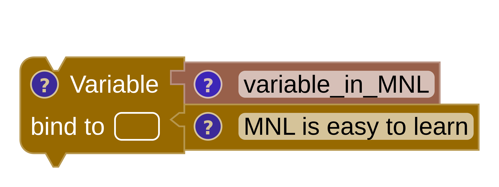
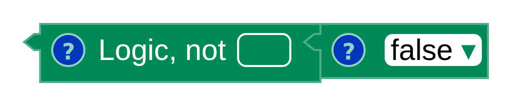
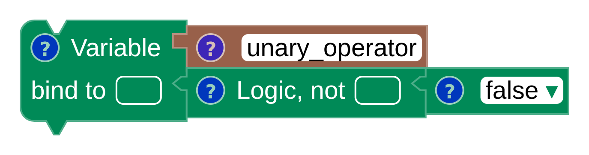
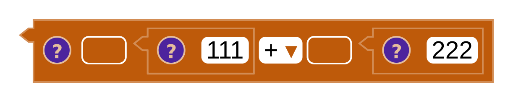
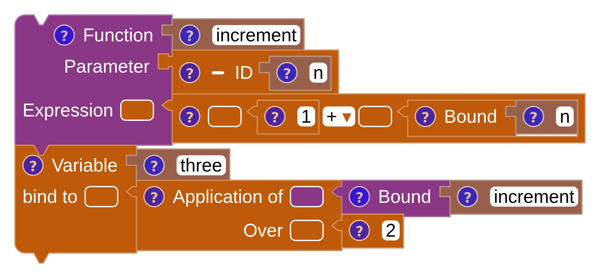
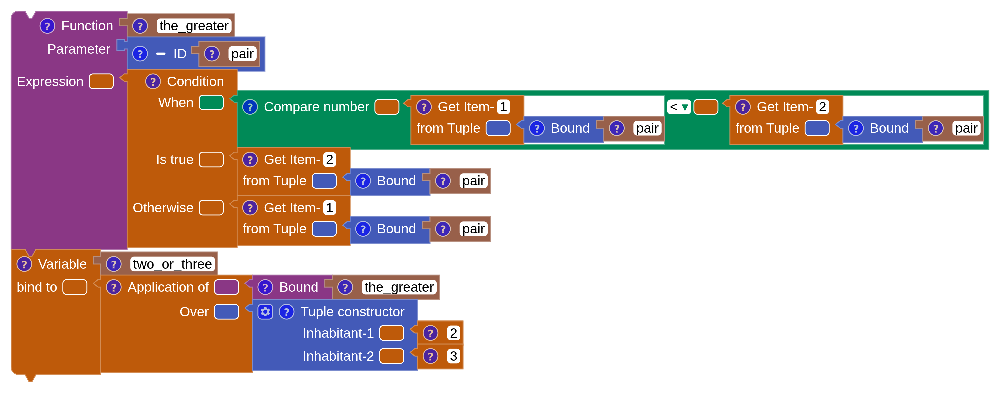
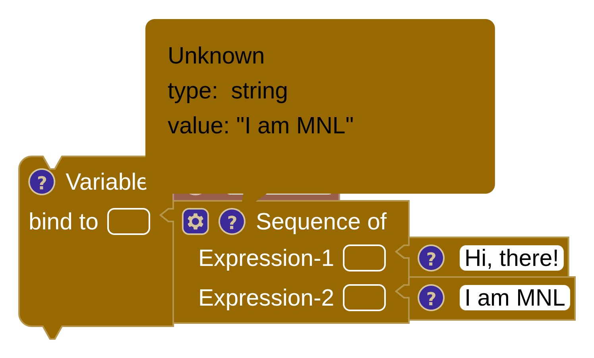
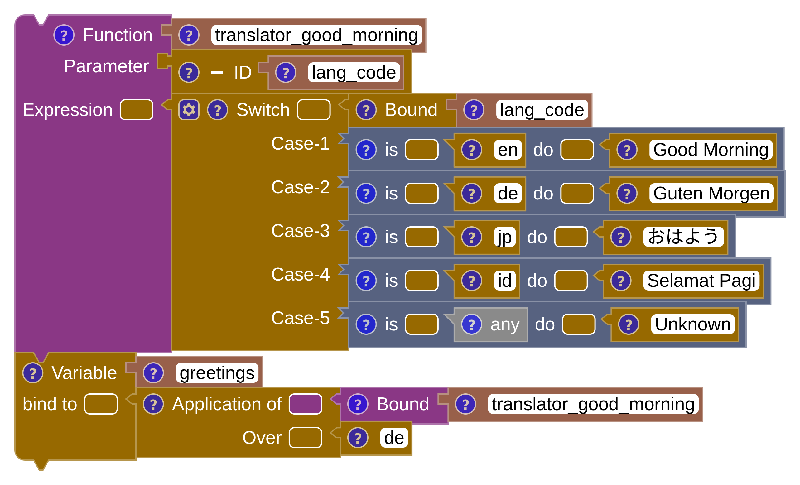
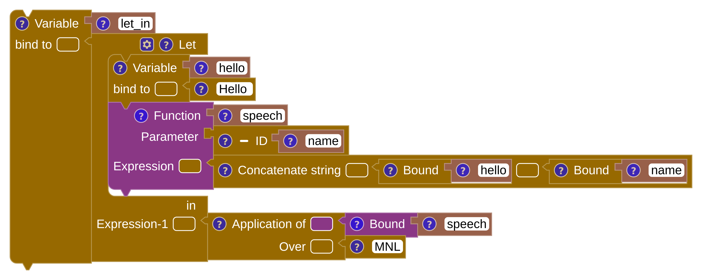

Your first program
MnL programs are built by dragging blocks out of the toolbox and attaching them to each other. Nothing is typed except names and literal values, and a block will only connect where the grammar allows it — so a program that assembles is a program that parses.
Drag, drop, attach
Open MnL and you start with an empty
workspace holding one block: the black top-level block marked MNL. It
is the parent of the whole program, and it accepts declaration blocks only.
- Open a category in the Blocks sidebar — start with Declarations.
- Drag a Variable or Function block onto the workspace.
- Drop it against the top-level block until the notches line up and it snaps into place.
- Fill the block’s inputs with more blocks — an identifier, an expression, and so on — until the warning triangle disappears.
Watch the status bar as you go: Blocks counts what is on the workspace, and
Types reads OK once everything type-checks. Drag a block to the bin at
the lower right of the workspace to delete it, or use
Workspace: Fit Blocks in View when a program grows past the edge.
Earlier versions of this guide called the drawing area the playground. In version 5 it is the workspace, and the toolbox lives in the Blocks sidebar.
Declaration
A declaration binds a name to a value. MnL has two declaration blocks:
- Variable — binds a name to any expression.
- Function — binds a name to a function. It is a convenience for a variable block bound to a lambda block.
Variable
A complete variable block needs an identity block for the name and an
expression block for the value. Below, the name variable_in_MNL is
bound to the string "MNL is easy to learn". Anywhere you later need that string, you
reach it through a Bound block carrying the same name.

SML
val variable_in_MNL = "MNL is easy to learn"Scala
val variable_in_MNL = "MNL is easy to learn"Expression
An expression is a value. Every expression block has one — that includes operators, constants
and constructors. Hover the ? icon on any block to read the type and value MnL has
worked out for it; see block info.
Operators
Primitive operators come in two shapes, by how many inputs they take: unary (one) and binary (two).
Unary


SML
(not false)
val unary_operator = (not false)Scala
(!false)
val unary_operator = (!false)Binary


SML
(111 + 222)
fun increment (n) = (1 + n)
val three = increment (2)Scala
(111 + 222)
def increment (n : Float) : Float = (1 + n)
val three = increment (2)Selection
The If / Else block — labelled Condition on the workspace — takes a boolean When, an Is true branch and an Otherwise branch. Both branches must have the same type, and that type is the type of the whole block.

SML
(* SML does not support type inference for a tuple as a parameter.
Other ML languages may support the syntax below. *)
fun the_greater (pair) =
if ((#1 pair) < (#2 pair)) then (#2 pair) else (#1 pair)
val two_or_three = the_greater ((2, 3))Scala
def the_greater (pair : (Float, Float)) : Float =
if ((pair(0)) < (pair(1))) then (pair(1)) else (pair(0))
val two_or_three = the_greater ((2, 3))Sequence
A sequence is a collection of expressions evaluated one after another. The last expression gives the sequence block its type and its value.

SML
val sequence = ("Hi, there!" ; "I am MNL")Scala
val sequence = (() => {
"Hi, there!"
"I am MNL"
})()Pattern matching
A Case of block matches an expression against a list of Match
blocks. Each match pairs a pattern with a result. The patterns available in the toolbox are
Pattern Boolean, Pattern Character, Pattern Number, Pattern
String, Pattern Unit and Pattern Any — the last being the catch-all,
written _.

SML
fun translator_good_morning (lang_code) =
case lang_code of
"en" => "Good Morning"
| "de" => "Guten Morgen"
| "jp" => "おはよう"
| "id" => "Selamat Pagi"
| _ => "Unknown"
val greetings = translator_good_morning ("de")Scala
def translator_good_morning (lang_code : String) : String =
lang_code match
case "en" => "Good Morning"
case "de" => "Guten Morgen"
case "jp" => "おはよう"
case "id" => "Selamat Pagi"
case _ => "Unknown"
val greetings = translator_good_morning ("de")Put Pattern Any at the end. Matches are tried in the order they appear, so a catch-all placed early will shadow every pattern below it.
Let … in
Let … in binds declarations locally, visible only inside the expression that follows.

SML
val let_in =
let
val hello = "Hello "
fun speech (name) = (hello ^ name)
in
speech ("MNL")
endScala
val let_in = (() => {
val hello = "Hello "
def speech (name : String) : String = (hello + name)
speech ("MNL")
})()With declarations, expressions and these four control constructs you can already write most of the bundled examples. Next, a closer look at the blocks themselves — what their shapes and colours mean, and how to read the icons they carry.